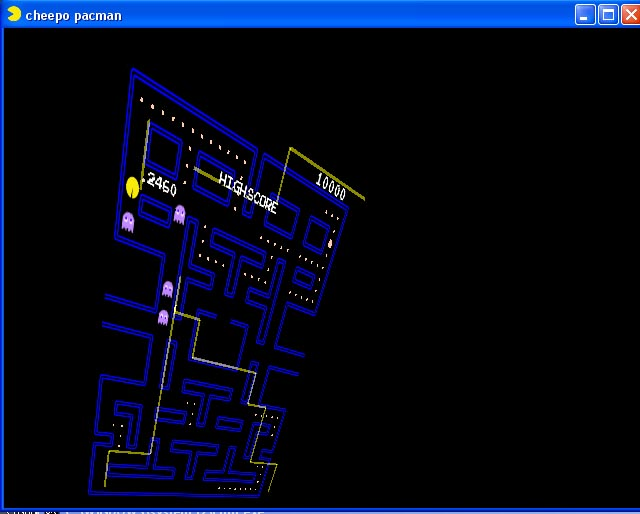
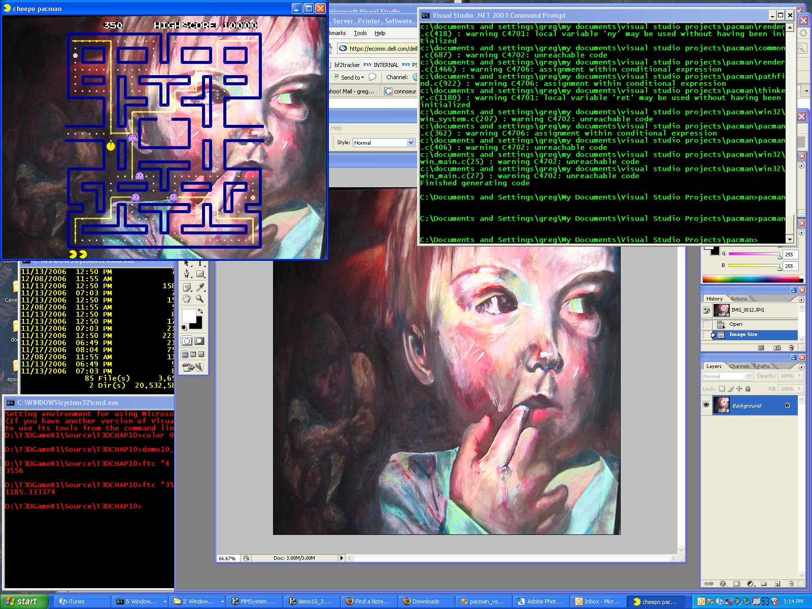
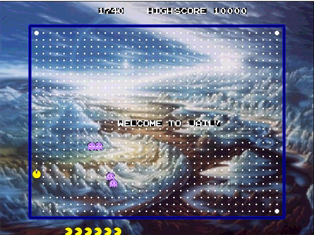
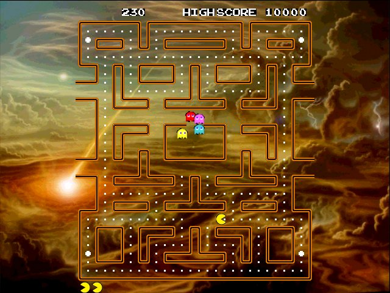
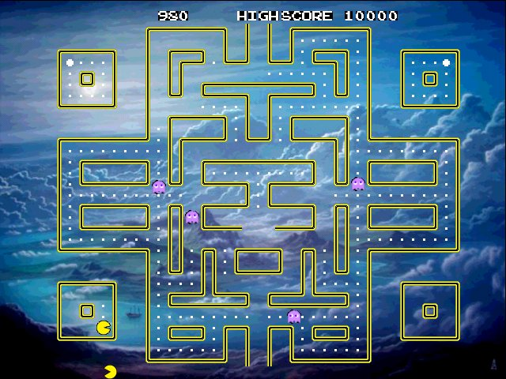

Cheepo OpenGL Pacman Clone
Latest version is 0.1-286


0.1-286 - adds a slideshow background
Newest version 0.1-286 - Lots of new features. Better ghost AI, better
framerate management. Everything's better, more playable too.
Download Pacman Version 0.1-286 here Windows Binary Only (so far)
The current readme is here
Special Keys: there is 'l' to fast-forward through the levels, 'c' which gives you extra-guys, 'r' which is pointless, but rotates the screen. and spacebar which togglles on/off the slideshow background.
Pictures 4/7/2007, yay!



Instructions: Just unzip the file to your desktop and click pacman.exe
Send Questions, Comments, Suggestions, Bugs to gnaughto@gmail.com (Greg Naughton)
So far its been known to run ok on machines running Windows XP and Vista
with vender hardware drivers installed for opengl acceleration. Usually this
means going to nvidia.com or ati.com depending on your graphics card
and downloading the newest driver and installing it.
Versions:
Alpha - 286
Alpha - 284
Alpha - 262
Alpha - 261
Alpha - 260
Alpha - 258
Alpha - 249